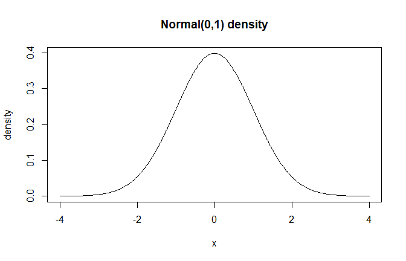

Overview
DPmixGPD supports multiple bulk kernels for the mixture components and can optionally splice a Generalized Pareto Distribution (GPD) tail beyond a threshold.
Theory (brief)
Each kernel defines the component density $K(y; \\theta)$. The mixture density is a convex combination of kernel components, and the GPD tail replaces the bulk kernel for when tail augmentation is enabled. This vignette focuses on the bulk kernel shapes.
Kernel Summary
kernel_df <- data.frame(
Kernel = c("normal", "gamma", "lognormal", "cauchy", "laplace", "invgauss", "amoroso"),
Parameters = c(
"mean, sd",
"shape, rate",
"meanlog, sdlog",
"location, scale",
"location, scale",
"mean, shape",
"location, scale, shape"
)
)
kable(kernel_df, align = "c", caption = "Available Bulk Kernels") %>%
kable_styling(bootstrap_options = c("striped", "hover"),
full_width = FALSE, position = "center")| Kernel | Parameters |
|---|---|
| normal | mean, sd |
| gamma | shape, rate |
| lognormal | meanlog, sdlog |
| cauchy | location, scale |
| laplace | location, scale |
| invgauss | mean, shape |
| amoroso | location, scale, shape |
Kernel Selection
The kernel is specified in build_nimble_bundle() via the
kernel argument.
bundle <- build_nimble_bundle(
y = y,
backend = "sb",
kernel = "lognormal",
GPD = TRUE,
components = 6,
mcmc = list(niter = 500, nburnin = 100, thin = 2, nchains = 1, seed = 1)
)Distribution Visualizations
x_all <- seq(-4, 4, length.out = 300)
x_pos <- seq(0.01, 8, length.out = 300)
dens_list <- list(
Normal = data.frame(x = x_all, density = dnormmix(x_all, w = 1, mean = 0, sd = 1)),
Cauchy = data.frame(x = x_all, density = dcauchymix(x_all, w = 1, location = 0, scale = 1)),
Laplace = data.frame(x = x_all, density = dlaplacemix(x_all, w = 1, location = 0, scale = 1)),
Gamma = data.frame(x = x_pos, density = dgammamix(x_pos, w = 1, shape = 2, scale = 1)),
Lognormal = data.frame(x = x_pos, density = dlognormalmix(x_pos, w = 1, meanlog = 0, sdlog = 0.6)),
InvGauss = data.frame(x = x_pos, density = dinvgaussmix(x_pos, w = 1, mean = 1, shape = 2)),
Amoroso = data.frame(x = x_pos, density = damorosomix(x_pos, w = 1, loc = 0, scale = 1, shape1 = 1.5, shape2 = 2))
)
plot_df <- do.call(rbind, lapply(names(dens_list), function(name) {
df <- dens_list[[name]]
df$Kernel <- name
df
}))
ggplot(plot_df, aes(x = x, y = density, color = Kernel)) +
geom_line(linewidth = 1) +
facet_wrap(~ Kernel, scales = "free") +
labs(x = "x", y = "Density", title = "Bulk Kernel Shapes (Vectorized DPmixGPD Functions)") +
theme_minimal() +
theme(legend.position = "none")